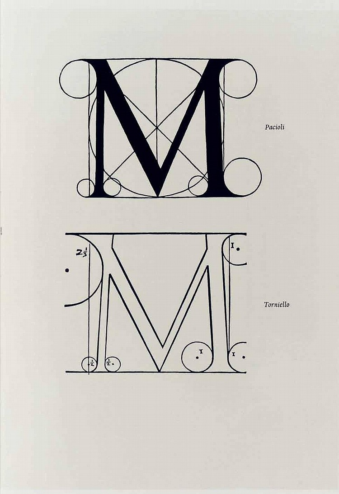

THE HISTORY OF BODONI TYPEFACE
WRITTEN BY JANEE EVANS
 Bodoni typeface is named after its creator, Giamattista Bodoni. He was an expert printer who ran a printing-office under the Duke of Parma. The design of Bodoni's type was permitted by and showcased the quality of his company's work in metal-casting, printing and of the paper made in Parma. It was first designed in the late eighteenth century and has since been revised frequently. Bodoni pulled his inspiration from a few others. He admired the work of John Baskerville and studied the designs of French type founders Pierre Simon and Firmin Didot. Although he studied the work of others his typeface was his own style.
Bodoni typeface has five different characteristics that are used to identify it. The first would be high and abrupt contrast between thick and thin strokes. The second would be abrupt (unbracketed) hairline (thin) serifs. The third characteristic is the vertical axis. Next would be the horizontal stress. The last characteristic would be the small aperture.
When Bodoni was first released it was called a classical design because of the rational structure. Soon it came to be called a modern serif font. Bodoni's later designs of the typeface are called modern and the earlier designs of it are now called transitional. There are also some version of Bodoni that are said to be difficult to read. This is due to “dazzle” caused by the alternating thick and thin strokes, mainly as the thin strokes are very thin at small point sizes.
Bodoni typeface has a long list of foundry type revivals and variants. Two of the more successful include ATF Bodoni and Bauer Bodoni. ATF's Bodoni series was first released in 1909 and was the first American direct rival of Bodoni's work. These variants were designed by Morris Fuller Benton. His design captured the flavor of Bodoni's original while emphasizing legibility. The revival was referred to as “the first accurate revival of a historical face for general printing and design applications”. This series includes 15 different font families. The Bauer Type Foundry design was drawn by Heinrich Jost in 1926. This design emphasizes the extreme contrast between hairline and main stroke. This series includes 5 different font families. There is also a Poster Bodoni variant that was created by Chauncey H. Griffith in 1929.
The Bodoni typeface has been used for a wide variety of different materials. In the eighteenth century it was used in Italian books to 1960s periodicals. In the 21st century, the late manner versions were used in advertising. The early manner versions were used for fine book printing. There is a list of about 15 different companies that uses the Bodoni typeface or one of its variants. It can be seen used in the posters for the film "Mama Mia," the Hilton Hotel restaurant and bar menu, and the Nirvana logo. The list of uses for the Bodoni typeface goes on, but that was just to name a few.